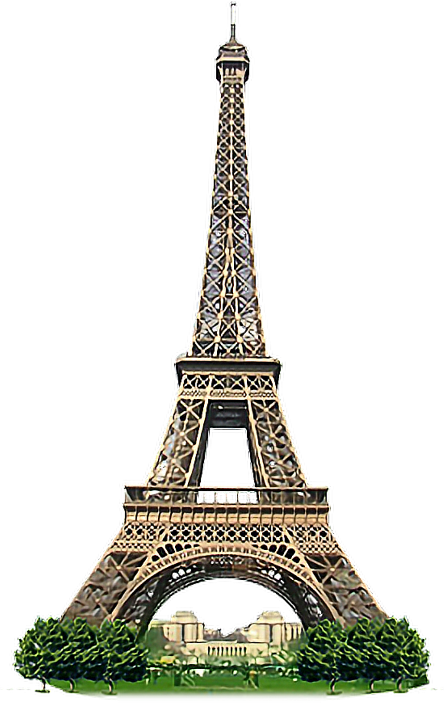

Regards sur l´Histoire franco- allemande
Traité de Verdun (843)
Les petits-fils de Charlemagne signent le traité de Verdun.
L'Empire est partagé en trois pays : Francie occidentale, Francie orientale et Lotharingie.
Cela jette les bases des États européens d'aujourd'hui.
Édit de Nantes (1598)
La fin de la guerre de religion.
Garantir la liberté de religion.
Unification du pays.
Voltaire's visit chez Frederick II (1750-53)
Frédéric II invite Voltaire à Sanssouci à Potsdam.
Voltaire le philosophe y habite pendant trois ans.
C'est se passe au siècle des Lumières.
Les invasions de Napoléon (1805-06)
Napoléon envahit l'Europe et l'Allemagne.
La naissance de l'Empire napoléonien(1804).
Guerre franco-allemande (1870-1871)
Guerre entre l'Empire allemand et l'Empire français.
l'Empire français perd des régions comme l'Alsace et la Lorraine.
Première Guerre mondiale (1914-1918)
dix-sept millions de personnes meurent.
L'industrialisation accélère la guerre.
Changer l'Europe et l'ordre mondial.
La Seconde Guerre mondiale (1939-1945)
Occupation de Paris par les troupes allemandes pendant la Seconde Guerre mondiale.
Libération par les Alliés.
Reconstruction aprés la guerre.
Traité de l'Élysée (1963)
Traité d'amitié entre la France et l'Allemagne après la guerre.
Encouragement de la coopération en politique, économie et culture.
Charles de Gaulle et Konrad Adenauer ont travaillé ensemble.
La création d'Arte (1991)
Chaîne de télé européenne avec des émissions en plusieurs langues.
Projet entre la France et l'Allemagne.
Les accords de Schengen (1995)
Accord pour enlever les contrôles à la frontière.
Renforcement de la coopération.
Participants 1995: Belgique, Allemagne, France, Luxembourg, Pays-Bas, Portugal, Espagne et Grèce.
La naissance de l'euro (2002)
Monnaie unique pour la plupart pays européens.
Aide à faire des affaires et à voyager en Europe.
Introduction des billets et des pièces en euros.